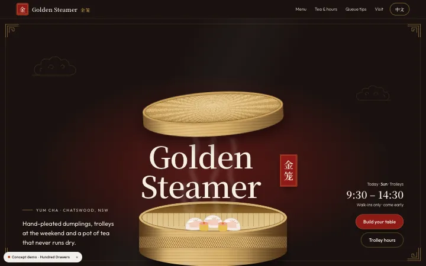
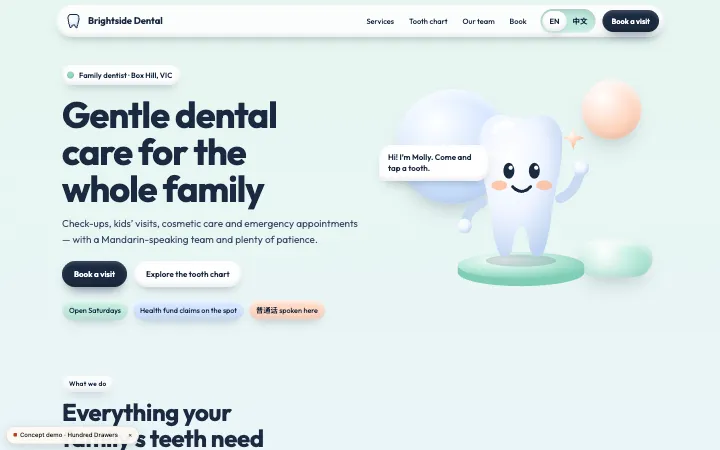
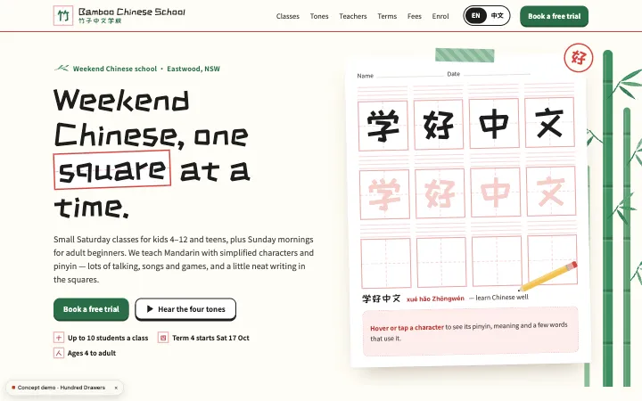

EMVALUE / Website services
English and Chinese websites, written for both audiences
We build English and Chinese websites for Australian businesses that serve both audiences. Each language is written for its readers, with matching page structures and clear language switching. We work mainly online, communicate in English and Chinese, and quote the agreed pages, content and maintenance responsibilities in writing before work starts.
When two languages are useful
- Businesses whose customers ask about services, prices or bookings in both English and Chinese. A useful page lets each audience understand the same offer without having to translate it themselves.
- Owners with an English website who want a Chinese version of the information their customers use most, rather than translating every page automatically.
- Teams that need a clear plan for keeping service information consistent when prices, hours or contact details change in either language.
The scope
What we agree in the scope
- The pages needed in each language, which information corresponds and whether any content belongs to only one audience.
- A writing and review approach for both languages. Machine translation is not treated as final copy. Business details still need your confirmation.
- A visible language switch that takes visitors to the corresponding page where both versions exist, rather than losing their place.
- Language labels for search engines and a plan for the person responsible for keeping each version current. These are part of the agreed structure.
Points to scope separately
- A second language is not included in the basic one-page website price; the bilingual page and content scope are quoted separately.
- Changes to an existing platform, booking connections or other third-party services need assessment before a commitment is made.
- Ongoing translation, content changes and maintenance need an agreed arrangement. Decide who reviews business facts and who updates each language.
Write for the reader in each language
English and Chinese readers need the same accurate business facts, but may need different explanations. We write for each audience instead of translating sentence by sentence. Services, prices and contact information should remain consistent even when the phrasing differs.
Decide who supplies business information and who checks each language. Machine translation is not final copy. The scope should state which writing and review work is included.
Matching pages and a clear switch
Map the two page lists together. An English service page needs a clear Chinese counterpart when both are required. Not every piece of content has to exist twice; decide that from the audiences and agreed scope.
The language switch should be easy to find and preserve context. Agree its placement and what happens when a page has only one language, so visitors understand where the link takes them.
Keep both versions current
Decide who maintains English and who maintains Chinese before launch. Consider price, service and opening-hour changes in both versions. The editing approach depends on the platform and the updates you expect.
Correct language markers help search engines distinguish pages. They do not promise a particular language or search position. Page correspondence and accurate content are the work we scope; results remain the search engine’s decision.
How we work
- 1
Understand the job
We discuss your business, audience, existing tools, budget and the problem you want to solve.
- 2
Agree the scope
You receive a written proposal covering the work, deliverables, schedule, costs and payment stages.
- 3
Design, build, review
Review layouts and working previews at agreed milestones. We confirm any change in scope before proceeding.
- 4
Launch & hand over
We check the agreed flows, help you launch and hand over accounts and guidance. Ongoing support is agreed with you.
Quote the language and content work
- 01
Bilingual websites are quoted in writing after a conversation about the pages, existing content and review responsibilities. The second language is a separate scope from a basic one-page site. The proposal explains deliverables, payment stages, content preparation and ongoing costs; extra pages or changed requirements are confirmed before additional work begins.
Interactive concepts

Golden Steamer · Concept
A concept we designed for a fictional yum cha restaurant: English and Chinese ordering content shows how one service can be explained to both audiences.

Brightside Dental · Concept
A concept we designed for a fictional family dentist: bilingual treatment information and a booking interaction provide a way to explore language switching.

Bamboo Chinese School · Concept
A concept we designed for a fictional weekend Chinese school: bilingual pages demonstrate how families can read course information in either language.
Working together across cities
We work online with businesses across Australia and overseas. If you'd prefer to meet in person, we can arrange it in Sydney, Melbourne or Perth.
Questions before you start
Does every page need both languages?
No. Start with what each audience needs to understand a service or make an enquiry. Map the pages needing counterparts and those remaining in one language. Explain those choices in the scope for navigation and updates.
Can you add Chinese to my existing English website?
We review your platform, content and account access first. Then we suggest whether to add a language to the existing structure or change it. Work and content responsibilities are confirmed in writing after assessment.
How do customers switch languages?
A clear navigation link takes visitors to the corresponding version when one exists. We agree its placement and how single-language pages are handled, letting customers continue reading the service they were looking at.
Will Google show the Chinese page to Chinese-speaking people?
We set language markers correctly to distinguish the versions. The search engine decides which page appears; that cannot be guaranteed. Language settings promise neither rankings nor a specific result for an individual search.
Plan the two versions together
Tell us what you sell or provide, who reads each language and whether you already have a website. We can use that information to discuss pages, content review and the practical work involved.
Last updated: 2026-10-07